Brown-stripe flatworm
Pseudobiceros sp. 2*
Family Pseudocerotidae
updated
Feb 2020
Where
seen? This brownish flatworm with a bold stripe down the centre
is often encountered on coral rubble near living reefs. They appear
to be seasonal, with several encountered during a visit, and then
not at all for some time.
Features: 5-8cm long. Usually with deep ruffles. Body
light to dark brown with darker brown to black narrow margins (no inner white margin). Center of the body raised with one dark brown line with diffuse white
edges. Underside uniformly paler colouration with same margin as the upperside of the body. It has a pair of pseudotentacles at the front that are square, ear-like, with white tips.
Sometimes mistaken for Bayer's flatworm which has a dark body and distinctive bright white margins inside the dark outer margin.
|
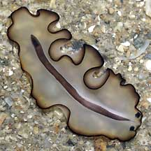
Sisters Islands, Mar 06 |
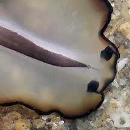
Pseudotentacles square, ear-like. |
|
*Species are
difficult to positively identify without close examination.
On this website, they are grouped by external features for convenience of
display.
| Brown-stripe flatworms on Singapore shores |
| Other sightings on Singapore shores |
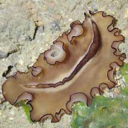
Changi, Jul 21
Shared by Jianlin LIu on facebook. |
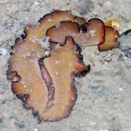
Changi Lost Coast, Jun 22
Shared by Dayna Cheah on facebook. |
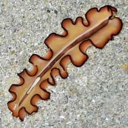
Changi Lost Coast, Jun 22
Shared by Loh Kok Sheng on facebook. |
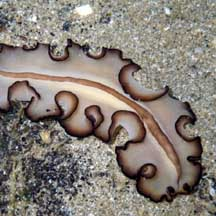
Changi, Feb 09
Shared by Loh Kok Sheng on his
blog. |
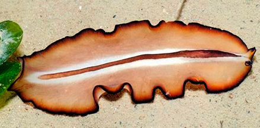
Changi, Nov 13
Shared by Loh Kok Sheng on his
blog. |
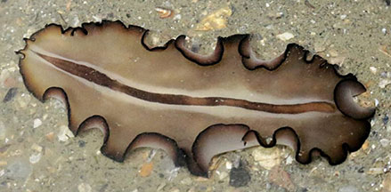
Pulau Ubin, Jul 17
Shared by Abel Yeo on facebook. |
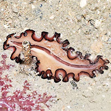
Pulau Ubin, Jul 17
Shared by Loh Kok Sheng on facebook. |
| |
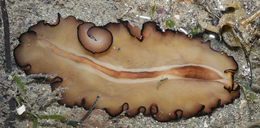
Pulau Ubin, Dec 17
Shared by Abel Yeo on facebook. |
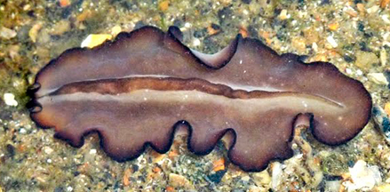
Pulau Ubin, Dec 09
Shared by Loh Kok Sheng on his
blog. |
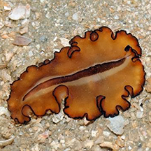
Chek Jawa, Jan 14
Shared by Loh Kok Sheng on his blog. |
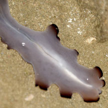
Chek Jawa, Jul 18
Photo
shared by Dayna Cheah on facebook. |
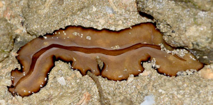
Chek Jawa, Jul 18
Photo
shared by Dayna Cheah on facebook. |
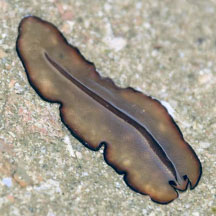
Chek Jawa, Jul 18
Shared by Dayna Cheah on facebook. |
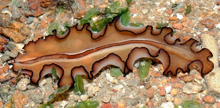
Pulau Sekudu, Oct 11
Photo
shared by Loh Kok Sheng on his
blog. |
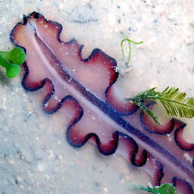
Pulau Sekudu, Jun 17
Shared by Jianlin Liu on facebook.
|
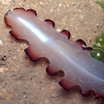
Pulau Sekudu, Jun 17
Shared by Jianlin Liu on facebook.
|
|
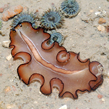
Beting Bronok, Nov 11
Shared by Loh Kok Sheng on his blog
|
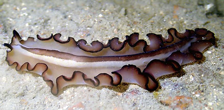
Beting Bronok, Jul 20
Photo shared by JIanlin Liu on facebook. . |
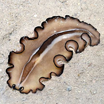
Beting Bronok, Jun 18
Photo shared by Loh Kok Sheng on facebook. . |
|
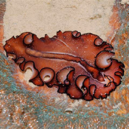
Tanah Merah, May 13
Shared by Loh Kok Sheng on his blog. |
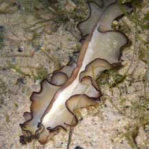
Labrador, Feb 09
Shared by Loh Kok Sheng on his
blog. |
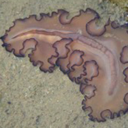
Lazarus, Feb 09
Shared by Loh Kok Sheng on his blog. |
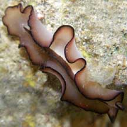
Lazarus, Feb 09
Shared by Loh Kok Sheng on his
blog. |
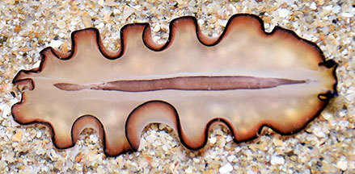
Kusu Island, Dec 18
Shared by Loh Kok Sheng on facebook. |
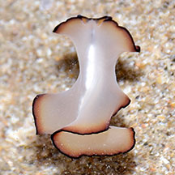
Kusu Island, Dec 18
Shared by Loh Kok Sheng on facebook. |
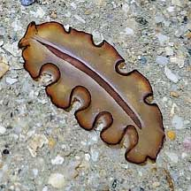
Kusu Island, May 22
Shared by Richard Kuah on facebook. |
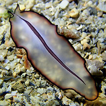
Pulau Jong, Jan 23
Shared by Jianlin Liu on facebook. |
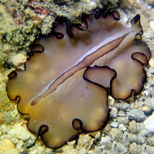
Pulau Jong, Jan 23
Shared by Jianlin Liu on facebook. |
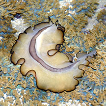
Big Sisters Island, Feb 26
Shared by Loh Kok Sheng on facebook. |
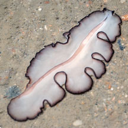
Big Sisters Island, Feb 26
Shared by Yan Le Su on facebook |
|
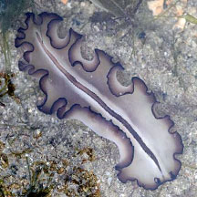
Small Sisters Island, May 18
Shared by Dayna Cheah on facebook.. |
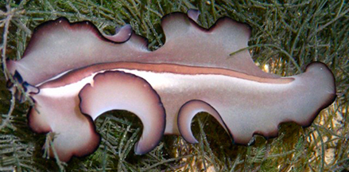
Sisters Island, May 09
Photo
shared by Loh Kok Sheng on his
blog. |
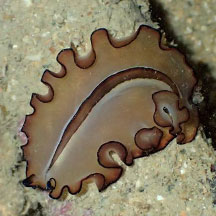
Pulau Tekukor, Sep 18
Shared by Liz Lim on facebook. |
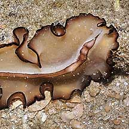
Pulau Semakau, Nov 09
Shared by James Koh on his
blog. |
|
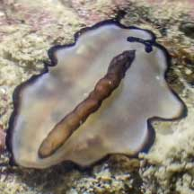
Raffles Lighthouse, Jen 22
Shared by Vincent Choo on facebook. |
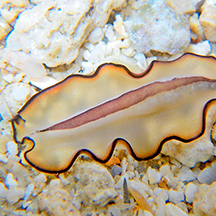
Pulau Biola, Dec 09
Shared by Loh Kok Sheng on flickr. |
|
Acknowledgement
With grateful thanks to Leslie H. Harris of the Natural
History Museum of Los Angeles County for comments on this worm.
Grateful thanks to Rene Ong for sharing details and identifying the flatworms on this page.
Links
- Pseudobiceros
gratus on Encyclopedia of Life, LifeDesks, Marine Flatworms
- Polycladida: Technical fact sheet.
- Pseudobiceros
gratus
(Polycladida: Pseudocerotidae) Brown Stripped flatworm from Wesley
Goi Chin Lui, 2011 on taxo4254.
References
- Rene S.L. Ong and Samantha J.W. Tong. 29 October 2018. A preliminary checklist and photographic catalogue of polyclad flatworms recorded from Singapore. Nature in Singapore 2018 11: 77–125.
- D. M. Bolaños, B. Q. Gan & R. S. L. Ong. 29 Jun 2016. First records of pseudocerotid flatworms (Platyhelminthes: Polycladida: Cotylea) from Singapore: A taxonomic report with remarks on colour variation.(pdf) The Raffles Bulletin of Zoology Supplement No. 34: 130-169 Pp. 130-169.
- Newman, L.J.
& Cannon, L.R.G. Nine new species of Pseudobiceros (Platyhelminthes:
Polycladida) from Indo-Pacific. Pp. 341-368. in the Raffles
Bulletin of Zoology vol 45.
- Newman, Leslie
and Lester Cannon. 2003. Marine
Flatworms: The World of Polyclads
 .
CSIRO Publishing. 97pp. .
CSIRO Publishing. 97pp.
- Humann, Paul
and Ned Deloach. 2010. Reef
Creature Identification: Tropical Pacific New World Publications.
497pp.
- Kuiter, Rudie
H and Helmut Debelius. 2009. World
Atlas of Marine Fauna
 . IKAN-Unterwasserachiv. 723pp. . IKAN-Unterwasserachiv. 723pp.
|
|
|